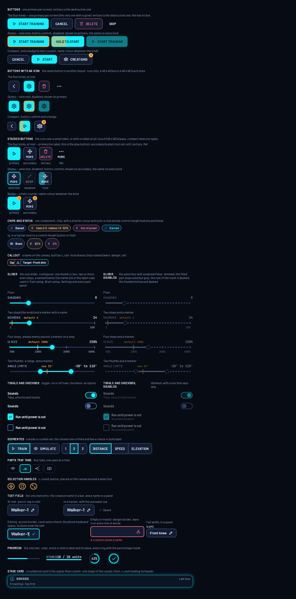
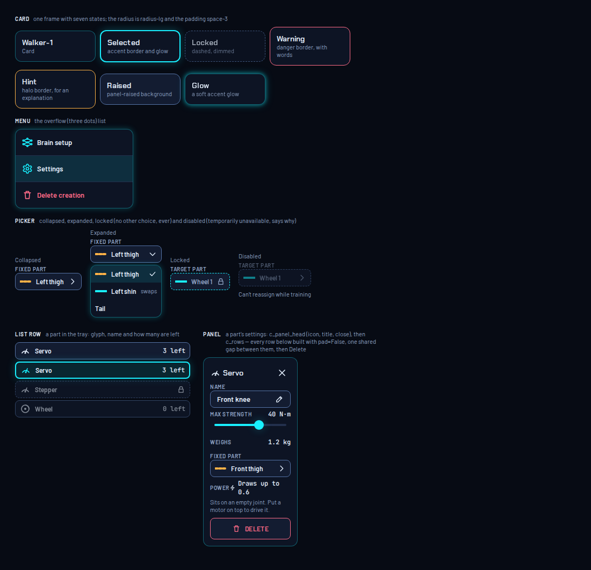
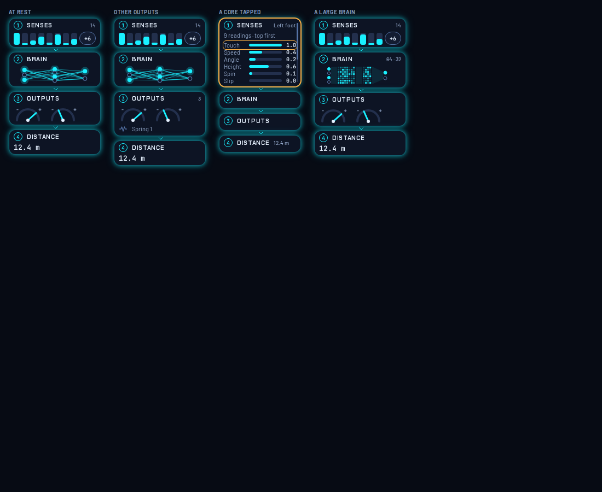
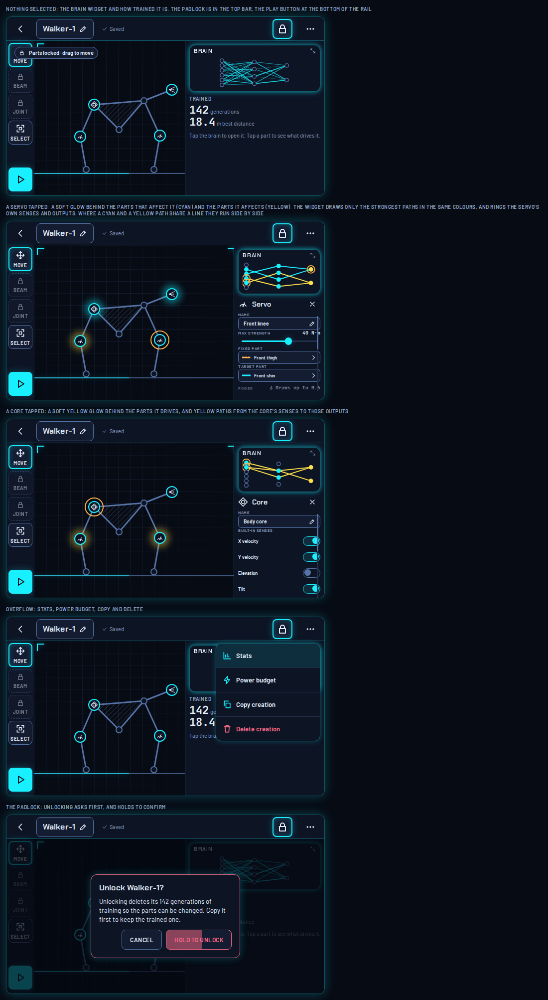

Node Runner design system
Android + Godot 4 teaching app about neuroevolution. Open a card for its live preview; the docs are Markdown.
README.md (everything in one file)library.md (the c_* controls)icons.mdIcon sheettokens.jsonbundle.css
Foundations

ComponentLibraryEvery control the game uses: buttons, sliders, toggles, chips, callouts and progressPreview · Docs

ComponentLibraryContMore from the component library: frames, an overflow menu, a picker, a part in the tray and a part's settings panelPreview · Docs
Components

SignalFlowSenses, Brain, Outputs, Distance: at rest, other outputs, a core tapped, a large brainPreview · Docs
Screens

BuildLockedBuildLocked: a trained creation, locked. Brain widget, what drives what, padlock and playPreview · Docs
Themes